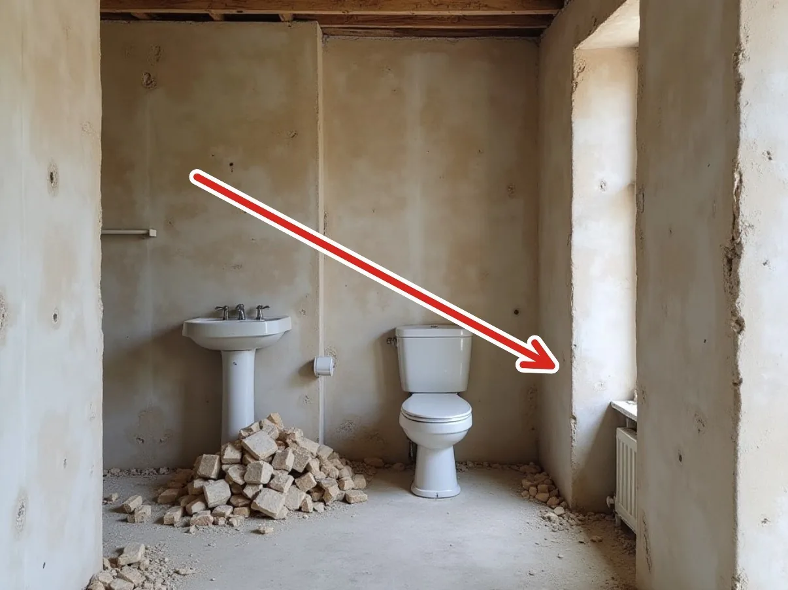

Reforma de banheiro — Rua Selborne, 14
Louças antigas retiradas e paredes preparadas

Werneck ReformasCNPJ 12.345.678/0001-90
+55 11 3794-6095
ola@werneck.example
ola@werneck.example
werneck.example
Página 1 de 3
Página 1 de 3